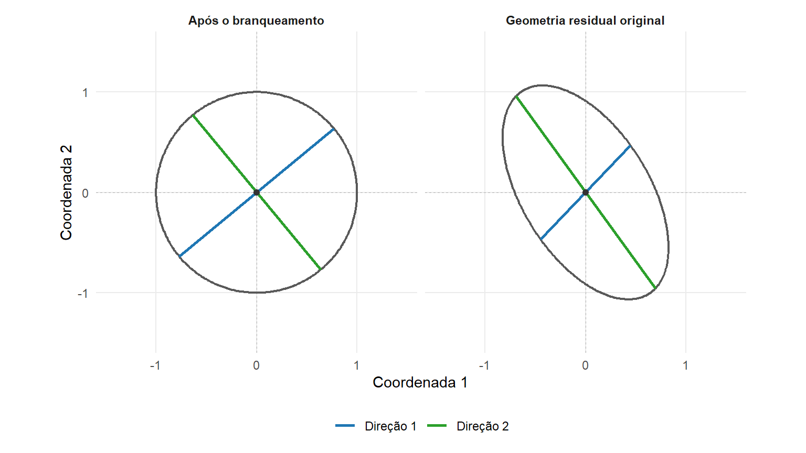

18 Formulação da MANOVA
A Análise de Variância Multivariada, MANOVA, testa hipóteses sobre funções estimáveis dos parâmetros de um modelo linear com várias respostas. O problema inclui comparações de vetores de médias associados a grupos, tratamentos, fatores, covariáveis ou outros termos representados no delineamento.
O modelo linear multivariado definido em Definição 11.3 é
\[ \boldsymbol{\mathcal Y} = \mathbf Z\mathbf B + \boldsymbol{\mathcal E}. \]
Na formulação clássica desenvolvida neste capítulo, as \(p\) respostas reunidas em \(\boldsymbol{\mathcal Y}\) são variáveis quantitativas. Variáveis categóricas associadas a grupos, tratamentos ou fatores são representadas na matriz de delineamento \(\mathbf Z\) por indicadores ou contrastes, enquanto covariáveis quantitativas podem ser incorporadas diretamente às suas colunas. Essa distinção segue a natureza das variáveis apresentada na Seção 1.2.
Neste capítulo, essa estrutura será utilizada sem reconstruir a teoria do modelo linear desenvolvida no Módulo 2. A MANOVA compara a variação multivariada atribuída a uma hipótese com a variação residual, representadas pelas matrizes \(\mathbf H\) e \(\mathbf E\).
Essa comparação conduz a um problema de autovalores generalizados. Suas raízes características são agregadas pelos critérios de Wilks, Pillai, Hotelling–Lawley e Roy (Anderson, 2003).
O desenvolvimento será concentrado na construção das matrizes de hipótese e erro, na formulação espectral e na interpretação dos quatro critérios. A base probabilística necessária à inferência clássica será retomada apenas na extensão necessária.
Os elementos da formulação são resumidos na Tabela 18.1.
| Elemento | Objeto | Papel na MANOVA |
|---|---|---|
| respostas | \(\boldsymbol{\mathcal Y}\) | reúne as \(p\) respostas observadas nas mesmas unidades |
| delineamento | \(\mathbf Z\) | representa grupos, tratamentos, covariáveis e demais termos |
| parâmetros | \(\mathbf B\) | determina os vetores de médias condicionais |
| hipótese | \(\mathbf C_1\mathbf B=\boldsymbol{\Theta}_0\) | especifica uma função estimável sobre todas as respostas |
| variação atribuída à hipótese | \(\mathbf H\) | mede o afastamento observado em relação a \(H_0\) |
| variação residual | \(\mathbf E\) | mede a variabilidade conjunta não explicada pelo modelo |
| comparação direcional | \(\mathbf a^\top\mathbf H\mathbf a/\mathbf a^\top\mathbf E\mathbf a\) | compara hipótese e erro para uma combinação das respostas |
| solução espectral | raízes e direções características | identifica direções extremas e quantifica o efeito relativo |
| critérios de teste | Wilks, Pillai, Hotelling–Lawley e Roy | agregam as mesmas raízes de formas distintas |
18.1 O problema de comparação multivariada
Considere inicialmente \(K\geq2\) grupos e um vetor de \(p\) respostas para cada unidade,
\[ \boldsymbol{\mathsf Y}_i = \begin{pmatrix} \mathsf Y_{i1}\\ \vdots\\ \mathsf Y_{ip} \end{pmatrix} \in \mathbb R^p. \]
Se o vetor de médias do grupo \(k\) é
\[ \boldsymbol{\mu}_k = \begin{pmatrix} \mu_{k1}\\ \vdots\\ \mu_{kp} \end{pmatrix} \in \mathbb R^p, \qquad k=1,\ldots,K, \]
a hipótese de igualdade entre os grupos é
\[ H_0: \boldsymbol{\mu}_1 = \boldsymbol{\mu}_2 = \cdots = \boldsymbol{\mu}_K. \tag{18.1}\]
A alternativa afirma que pelo menos dois desses vetores de médias diferem.
Quando
\[ p=1, \]
a hipótese em Equação 18.1 é univariada e a comparação pode ser expressa pela razão entre uma soma de quadrados associada ao efeito e uma soma de quadrados residual.
Quando
\[ p>1, \]
o afastamento entre os grupos possui direção no espaço das respostas. Uma diferença pequena em cada resposta considerada isoladamente pode formar uma combinação linear com separação relevante, enquanto diferenças marginais aparentemente grandes podem refletir informação redundante entre respostas associadas.
A MANOVA considera simultaneamente a magnitude das diferenças entre os vetores de médias, a variabilidade residual de cada resposta e as covariâncias residuais entre as respostas.
Por isso, o problema não é equivalente a realizar \(p\) análises de variância independentes. A estrutura conjunta é representada por matrizes de somas de quadrados e produtos cruzados.
18.2 A hipótese no modelo linear multivariado
O problema de comparação entre grupos é uma aplicação do modelo linear multivariado. Indicadores de grupos, tratamentos, fatores e covariáveis são incorporados à matriz de delineamento \(\mathbf Z\).
A hipótese linear geral foi definida em Definição 11.17 como
\[ H_0: \mathbf C_1 \mathbf B \mathbf C_2 = \boldsymbol{\Theta}_0. \tag{18.2}\]
Na MANOVA formulada para as \(p\) respostas originais,
\[ \mathbf C_2 = \mathbf I_p, \]
e a hipótese torna-se
\[ H_0: \mathbf C_1 \mathbf B = \boldsymbol{\Theta}_0, \tag{18.3}\]
com
\[ \mathbf C_1 \in \mathbb R^{g\times q} \]
e
\[ \boldsymbol{\Theta}_0 \in \mathbb R^{g\times p}. \]
A matriz \(\mathbf C_1\) reúne os contrastes ou combinações dos parâmetros que definem o efeito testado. Consideraremos suas linhas linearmente independentes,
\[ \operatorname{posto} \left( \mathbf C_1 \right) = g, \tag{18.4}\]
e a função \(\mathbf C_1\mathbf B\) estimável. Pela condição de Equação 11.117,
\[ \mathbf C_1 = \mathbf C_1 \mathbf Z^+ \mathbf Z. \tag{18.5}\]
Nessas condições, os graus de liberdade da hipótese são
\[ \nu_H = g. \tag{18.6}\]
Para o efeito completo de \(K\) grupos,
\[ g = K-1. \tag{18.7}\]
Assim, a hipótese de igualdade dos vetores de médias em Equação 18.1 é um caso particular da hipótese linear geral já construída no Módulo 2.
18.2.1 Matrizes de hipótese e erro
A SQPC associada à hipótese foi definida em Definição 11.18. Para a hipótese em Equação 18.3, denote-a por
\[ \mathbf H \in \mathbb R^{p\times p}, \]
com
\[ \mathbf H = \mathbf H^\top \succeq \mathbf0. \]
A matriz \(\mathbf H\) representa a variação multivariada associada ao afastamento observado da hipótese. Seus elementos diagonais correspondem às parcelas das respostas individuais, enquanto os elementos fora da diagonal registram produtos cruzados entre esses afastamentos.
A SQPC residual definida em Definição 11.11 é
\[ \mathbf E = \widehat{\mathbf U}^{\top} \widehat{\mathbf U} \in \mathbb R^{p\times p}, \]
com
\[ \mathbf E = \mathbf E^\top \succeq \mathbf0. \]
Ela representa a variação residual conjunta utilizada como referência para avaliar o efeito.
A Tabela 18.2 resume essas funções.
| Matriz | Origem | Interpretação |
|---|---|---|
| \(\mathbf H\) | hipótese testada | variação multivariada associada ao afastamento observado de \(H_0\) |
| \(\mathbf E\) | resíduos do modelo | variação multivariada residual utilizada como referência |
Se
\[ \mathbf H = \mathbf0, \]
não há afastamento observado da hipótese nas funções paramétricas consideradas. Quando \(\mathbf H\neq\mathbf0\), sua magnitude deve ser interpretada relativamente à estrutura residual representada por \(\mathbf E\).
A formulação da MANOVA consiste, portanto, em comparar essas duas estruturas matriciais.
18.3 Hipótese e erro em uma combinação linear das respostas
Considere uma combinação linear das \(p\) respostas definida por
\[ \mathsf W = \mathbf a^\top \boldsymbol{\mathsf Y}, \qquad \mathbf a \in \mathbb R^p. \tag{18.8}\]
Aplicando a mesma combinação linear às matrizes observadas de hipótese e erro, obtêm-se os escalares
\[ h(\mathbf a) = \mathbf a^\top \mathbf H \mathbf a \tag{18.9}\]
e
\[ e(\mathbf a) = \mathbf a^\top \mathbf E \mathbf a. \tag{18.10}\]
As duas expressões são formas quadráticas.
A quantidade
\[ h(\mathbf a) \]
mede a variação atribuída à hipótese na combinação das respostas definida por \(\mathbf a\), enquanto
\[ e(\mathbf a) \]
mede a variação residual dessa mesma combinação.
Para a formulação espectral clássica desenvolvida a seguir, suponha
\[ \mathbf E \succ \mathbf0. \tag{18.11}\]
Então,
\[ \mathbf a^\top \mathbf E \mathbf a > 0 \]
para todo
\[ \mathbf a\neq\mathbf0, \]
e pode-se definir
\[ \mathcal R_{\mathbf H,\mathbf E} (\mathbf a) = \frac{ \mathbf a^\top \mathbf H \mathbf a }{ \mathbf a^\top \mathbf E \mathbf a }. \tag{18.12}\]
A expressão em Equação 18.12 é o quociente de Rayleigh generalizado definido em Definição 5.12, aplicado ao par
\[ (\mathbf H,\mathbf E). \]
As matrizes \(\mathbf H\) e \(\mathbf E\) fornecem, respectivamente, as formas quadráticas associadas à hipótese e ao erro.
A razão é invariante à escala de \(\mathbf a\). Para qualquer
\[ c\neq0, \]
\[ \mathcal R_{\mathbf H,\mathbf E} (c\mathbf a) = \mathcal R_{\mathbf H,\mathbf E} (\mathbf a). \]
Portanto, interessa a direção determinada por \(\mathbf a\), e não seu comprimento.
Uma direção apresenta grande razão hipótese/erro quando a combinação correspondente das respostas exibe variação associada à hipótese elevada relativamente à variabilidade residual nessa mesma combinação.
18.4 Problema espectral da MANOVA
O problema consiste em identificar as direções nas quais a razão em Equação 18.12 assume seus valores extremos. Pelo resultado de Teorema 5.8, aplicado ao par simétrico
\[ (\mathbf H,\mathbf E), \]
com
\[ \mathbf H \succeq \mathbf0 \qquad\text{e}\qquad \mathbf E \succ \mathbf0, \]
os extremos de
\[ \max_{\mathbf a\neq\mathbf0} \frac{ \mathbf a^\top \mathbf H \mathbf a }{ \mathbf a^\top \mathbf E \mathbf a } \tag{18.13}\]
são determinados pelo problema
\[ \mathbf H \mathbf a = \lambda \mathbf E \mathbf a. \tag{18.14}\]
Essa é a estrutura de autovalor generalizado definida em Definição 5.11.
Definição 18.1 (Raízes características da MANOVA) Sejam
\[ \mathbf H,\mathbf E \in \mathbb R^{p\times p} \]
simétricas, com
\[ \mathbf H \succeq \mathbf0 \]
e
\[ \mathbf E \succ \mathbf0. \]
As raízes características da MANOVA são os autovalores generalizados
\[ \lambda_1 \geq \lambda_2 \geq \cdots \geq \lambda_p \geq 0 \]
do par \((\mathbf H,\mathbf E)\). Como \(\mathbf E\succ\mathbf0\), os autovetores generalizados associados podem ser escolhidos com a normalização
\[ \boldsymbol{\alpha}_j^\top \mathbf E \boldsymbol{\alpha}_j = 1. \]
Com essa convenção,
\[ \mathbf H \boldsymbol{\alpha}_j = \lambda_j \mathbf E \boldsymbol{\alpha}_j. \]
Se
\[ r_H = \operatorname{posto} \left( \mathbf H \right), \]
então exatamente \(r_H\) raízes são positivas.
Como a matriz de hipótese associada a uma função de posto \(g\) satisfaz
\[ \operatorname{posto} \left( \mathbf H \right) \leq \min(p,g), \]
tem-se
\[ r_H \leq \min(p,g). \tag{18.15}\]
No efeito completo de \(K\) grupos,
\[ g = K-1, \]
logo
\[ r_H \leq \min \left( p, K-1 \right). \tag{18.16}\]
Assim, o número de direções nas quais um efeito pode aparecer é limitado simultaneamente pelo número de respostas e pelo número de contrastes independentes da hipótese.
Os autovetores generalizados podem ser escolhidos ortonormais segundo o produto interno induzido por \(\mathbf E\):
\[ \boldsymbol{\alpha}_j^\top \mathbf E \boldsymbol{\alpha}_\ell = \delta_{j\ell}. \tag{18.17}\]
As direções características não precisam, portanto, ser ortogonais na geometria euclidiana original das respostas.
18.4.1 Padronização pela dispersão residual e interpretação geométrica
Como
\[ \mathbf E \succ \mathbf0, \]
a raiz quadrada principal de \(\mathbf E\) e sua inversa existem por Definição 5.9.
Defina
\[ \mathbf z = \mathbf E^{1/2} \mathbf a. \]
Então,
\[ \mathbf a = \mathbf E^{-1/2} \mathbf z, \]
e o problema generalizado transforma-se em
\[ \mathbf M_{\mathrm{HE}} \mathbf z = \lambda \mathbf z, \tag{18.18}\]
em que
\[ \mathbf M_{\mathrm{HE}} = \mathbf E^{-1/2} \mathbf H \mathbf E^{-1/2} \in \mathbb R^{p\times p}. \tag{18.19}\]
Como \(\mathbf H\succeq\mathbf0\),
\[ \mathbf M_{\mathrm{HE}} = \mathbf M_{\mathrm{HE}}^\top \succeq \mathbf0. \]
Além disso,
\[ \operatorname{posto} \left( \mathbf M_{\mathrm{HE}} \right) = \operatorname{posto} \left( \mathbf H \right) = r_H, \]
de modo que seus \(r_H\) autovalores positivos são exatamente as raízes positivas da MANOVA.
A transformação também produz
\[ \mathbf a^\top \mathbf E \mathbf a = \mathbf z^\top \mathbf z \]
e
\[ \mathbf a^\top \mathbf H \mathbf a = \mathbf z^\top \mathbf M_{\mathrm{HE}} \mathbf z. \]
Portanto,
\[ \mathcal R_{\mathbf H,\mathbf E} (\mathbf a) = \frac{ \mathbf z^\top \mathbf M_{\mathrm{HE}} \mathbf z }{ \mathbf z^\top \mathbf z }. \tag{18.20}\]
A transformação pela matriz de erro converte a geometria residual em uma geometria euclidiana. Nesse sistema, \(\mathbf M_{\mathrm{HE}}\) representa a magnitude da hipótese relativamente à dispersão residual.
A Figura 18.1 ilustra essa transformação no espaço das combinações lineares. Antes da padronização, o conjunto de direções que satisfaz
\[ \mathbf a^\top \mathbf E \mathbf a = 1 \]
forma uma elipse determinada pela geometria residual. Sob a transformação
\[ \mathbf z = \mathbf E^{1/2} \mathbf a, \]
esse mesmo conjunto passa a satisfazer
\[ \mathbf z^\top \mathbf z = 1, \]
tornando-se o círculo unitário. Nesse sistema padronizado, as direções características são os autovetores de \(\mathbf M_{\mathrm{HE}}\).
A Figura 18.1 não representa observações, médias de grupos ou regiões de probabilidade. O contorno representa o conjunto de combinações lineares normalizadas pela forma quadrática residual. O branqueamento também não elimina a variabilidade residual dos dados; ele reexpressa sua métrica de modo que
\[ \mathbf a^\top \mathbf E \mathbf a \]
se torne a norma euclidiana
\[ \mathbf z^\top \mathbf z. \]
Nesse sistema, as direções características podem ser interpretadas diretamente como os eixos espectrais de \(\mathbf M_{\mathrm{HE}}\).
Se uma direção característica for normalizada por
\[ \boldsymbol{\alpha}_j^\top \mathbf E \boldsymbol{\alpha}_j = 1, \]
então
\[ \boldsymbol{\alpha}_j^\top \mathbf H \boldsymbol{\alpha}_j = \lambda_j. \tag{18.21}\]
Cada raiz \(\lambda_j\) representa, assim, a razão hipótese/erro na respectiva direção característica normalizada. As raízes ordenam as direções segundo a intensidade do efeito relativamente à estrutura residual.
A hipótese matricial é, desse modo, convertida em uma coleção ordenada de razões hipótese/erro. Os quatro critérios clássicos da MANOVA agregam essa mesma coleção de formas distintas.
18.5 Critérios multivariados
Considere as raízes características
\[ \lambda_1 \geq \lambda_2 \geq \cdots \geq \lambda_p \geq 0 \]
do par \((\mathbf H,\mathbf E)\) definido em Definição 18.1, sob
\[ \mathbf H \succeq \mathbf0 \qquad\text{e}\qquad \mathbf E \succ \mathbf0. \]
Se
\[ r_H = \operatorname{posto} \left( \mathbf H \right), \]
apenas
\[ \lambda_1,\ldots,\lambda_{r_H} \]
são positivas, quando \(r_H>0\).
Os quatro critérios clássicos da MANOVA agregam essa mesma coleção de raízes em uma estatística global. Para algumas representações, é útil definir
\[ \theta_j = \frac{ \lambda_j }{ 1+\lambda_j }, \qquad j=1,\ldots,p. \tag{18.22}\]
Como \(\lambda_j\geq0\),
\[ 0 \leq \theta_j < 1, \]
e a transformação preserva a ordenação das raízes.
Definição 18.2 (Lambda de Wilks) A lambda de Wilks é
\[ \Lambda_{\mathrm W} = \frac{ |\mathbf E| }{ |\mathbf E+\mathbf H| } = \prod_{j=1}^{p} \frac{1}{ 1+\lambda_j }. \tag{18.23}\]
De fato,
\[ \begin{aligned} |\mathbf E+\mathbf H| &= |\mathbf E| \left| \mathbf I_p+\mathbf E^{-1}\mathbf H \right| \\ &= |\mathbf E| \prod_{j=1}^{p} \left( 1+\lambda_j \right), \end{aligned} \]
o que produz a representação pelas raízes.
Em termos de Equação 18.22,
\[ \Lambda_{\mathrm W} = \prod_{j=1}^{p} \left( 1-\theta_j \right). \tag{18.24}\]
A lambda de Wilks satisfaz
\[ 0 < \Lambda_{\mathrm W} \leq 1, \]
com
\[ \Lambda_{\mathrm W}=1 \]
se, e somente se,
\[ \mathbf H=\mathbf0. \]
Valores menores correspondem a maior afastamento relativo entre hipótese e erro. Sua ligação com a razão de verossimilhanças será retomada na base probabilística (Wilks, 1932).
Definição 18.3 (Traço de Pillai) O traço de Pillai é
\[ V = \operatorname{tr} \left[ \mathbf H \left( \mathbf H+\mathbf E \right)^{-1} \right] = \sum_{j=1}^{p} \frac{ \lambda_j }{ 1+\lambda_j }. \tag{18.25}\]
Portanto,
\[ V = \sum_{j=1}^{p} \theta_j. \]
Cada raiz contribui por uma quantidade limitada ao intervalo \([0,1)\), de modo que raízes muito elevadas não produzem contribuições ilimitadas ao critério (Pillai, 1955).
Definição 18.4 (Traço de Hotelling–Lawley) O traço de Hotelling–Lawley é
\[ U = \operatorname{tr} \left( \mathbf E^{-1} \mathbf H \right) = \sum_{j=1}^{p} \lambda_j. \tag{18.26}\]
O critério utiliza diretamente a soma das razões hipótese/erro. Como
\[ \lambda_j\geq0, \]
tem-se
\[ U\geq0, \]
com igualdade se, e somente se, \(\mathbf H=\mathbf0\).
Definição 18.5 (Maior raiz de Roy) A maior raiz de Roy é
\[ \Theta_{\mathrm R} = \lambda_1. \tag{18.27}\]
Pela caracterização do quociente de Rayleigh generalizado,
\[ \Theta_{\mathrm R} = \max_{\mathbf a\neq\mathbf0} \frac{ \mathbf a^\top \mathbf H \mathbf a }{ \mathbf a^\top \mathbf E \mathbf a }. \tag{18.28}\]
Esse critério utiliza apenas a direção característica de maior razão hipótese/erro.
18.6 Uma mesma estrutura, quatro formas de agregação
Os quatro critérios são funções da mesma coleção de raízes características
\[ \lambda_1,\ldots,\lambda_p \]
obtida do problema
\[ \mathbf H \mathbf a = \lambda \mathbf E \mathbf a. \]
As raízes nulas não alteram os critérios. A Tabela 18.3 resume as diferentes formas de agregação.
| Critério | Expressão em função das raízes | Forma de agregação | Evidência crescente contra \(H_0\) |
|---|---|---|---|
| Wilks | \(\displaystyle \prod_{j=1}^{p}(1+\lambda_j)^{-1}\) | produto | valores menores |
| Pillai | \(\displaystyle \sum_{j=1}^{p}\frac{\lambda_j}{1+\lambda_j}\) | soma limitada | valores maiores |
| Hotelling–Lawley | \(\displaystyle \sum_{j=1}^{p}\lambda_j\) | soma direta | valores maiores |
| Roy | \(\lambda_1\) | maior raiz | valores maiores |
Roy concentra a comparação na direção dominante; Hotelling–Lawley soma diretamente as magnitudes das raízes; Pillai limita a contribuição individual de cada raiz; e Wilks combina multiplicativamente toda a coleção.
Os critérios podem, portanto, responder de forma diferente à distribuição do efeito entre as direções características, embora todos sejam construídos a partir da mesma relação espectral entre \(\mathbf H\) e \(\mathbf E\).
As transformações utilizadas para obter distribuições de referência ou valores críticos dependem de \(p\), dos graus de liberdade da hipótese e do erro e do modelo probabilístico adotado. Essas calibrações pertencem à etapa inferencial aplicada e não serão desenvolvidas neste capítulo.
18.6.1 Aprofundamento: base probabilística dos critérios
Considere
\[ \boldsymbol{\mathcal Y} = \mathbf Z\mathbf B + \boldsymbol{\mathcal E}, \]
com erros independentes
\[ \boldsymbol{\mathsf e}_i \sim N_p \left( \mathbf0, \boldsymbol{\Sigma} \right), \qquad i=1,\ldots,n, \tag{18.29}\]
em que
\[ \boldsymbol{\Sigma} \succ \mathbf0 \]
é comum às unidades consideradas pelo modelo.
Para uma hipótese estimável
\[ H_0: \mathbf C_1 \mathbf B = \boldsymbol{\Theta}_0, \]
com
\[ \operatorname{posto} \left( \mathbf C_1 \right) = g, \]
os graus de liberdade residuais são
\[ \nu_E = n- \operatorname{posto} \left( \mathbf Z \right), \]
conforme Definição 11.12 e Equação 11.77.
Denote por
\[ \boldsymbol{\mathsf H} \]
a SQPC aleatória da hipótese e por
\[ \boldsymbol{\mathsf E}_{\mathrm{res}} \]
a SQPC residual aleatória. Especializando Proposição 12.12 para as respostas originais, sob \(H_0\),
\[ \boldsymbol{\mathsf H} \mid \mathbf Z \sim W_p \left( g, \boldsymbol{\Sigma} \right), \tag{18.30}\]
\[ \boldsymbol{\mathsf E}_{\mathrm{res}} \mid \mathbf Z \sim W_p \left( \nu_E, \boldsymbol{\Sigma} \right), \tag{18.31}\]
e
\[ \boldsymbol{\mathsf H} \perp \boldsymbol{\mathsf E}_{\mathrm{res}} \mid \mathbf Z. \tag{18.32}\]
A distribuição da SQPC residual também foi estabelecida em Proposição 12.10. Esses resultados não precisam ser novamente demonstrados.
A estrutura normal–Wishart fornece a base probabilística dos testes clássicos da MANOVA. A mesma matriz populacional
\[ \boldsymbol{\Sigma} \]
descreve a dispersão residual das respostas e sustenta a utilização de uma única matriz de erro como referência para a comparação com \(\mathbf H\).
Quando diferentes grupos possuem matrizes de covariâncias populacionais distintas, essa interpretação comum deixa de ser exata. As consequências dessa violação serão retomadas na Seção 18.8.
18.6.1.1 Lambda de Wilks e razão de verossimilhanças
A lambda de Wilks possui uma ligação direta com a razão de verossimilhanças do modelo linear normal multivariado. Essa relação já foi desenvolvida no Módulo 2 e é retomada aqui para conectar a formulação por modelos encaixados à representação espectral da MANOVA.
Para modelos encaixados, Proposição 11.13 fornece
\[ \mathbf E_R = \mathbf E_F + \mathbf H, \]
em que \(\mathbf E_F\) e \(\mathbf E_R\) são as SQPCs residuais dos modelos completo e reduzido.
No Módulo 2, Equação 12.64 estabeleceu
\[ \Lambda_{\mathrm{RV}} = \left[ \frac{ |\mathbf E_F| }{ |\mathbf E_F+\mathbf H| } \right]^{n/2}. \]
Na notação deste capítulo,
\[ \mathbf E_F = \mathbf E, \qquad \mathbf E_R = \mathbf E+\mathbf H. \]
Como Equação 12.65 define a razão de determinantes como lambda de Wilks,
\[ \Lambda_{\mathrm{RV}} = \Lambda_{\mathrm W}^{\,n/2}. \tag{18.33}\]
A representação
\[ \Lambda_{\mathrm W} = \frac{ |\mathbf E| }{ |\mathbf E+\mathbf H| } \]
evidencia sua origem na comparação entre modelos encaixados, enquanto
\[ \Lambda_{\mathrm W} = \prod_{j=1}^{p} \frac1{1+\lambda_j} \]
evidencia sua representação espectral (Wilks, 1932).
Os critérios de Pillai, Hotelling–Lawley e Roy são construídos a partir da mesma estrutura aleatória \((\boldsymbol{\mathsf H},\boldsymbol{\mathsf E}_{\mathrm{res}})\), embora não correspondam diretamente à razão de verossimilhanças do modelo normal.
A formulação distingue, portanto, três níveis:
- as matrizes observadas \(\mathbf H\) e \(\mathbf E\) e suas raízes características;
- os quatro critérios globais calculados a partir dessas raízes;
- a calibração inferencial clássica, que acrescenta a estrutura probabilística normal–Wishart.
A definição dos critérios pertence aos dois primeiros níveis. A estrutura normal–Wishart fornece sua fundamentação probabilística clássica, mas não é necessária para definir algebricamente \(\mathbf H\), \(\mathbf E\) ou suas raízes características.
As condições do modelo e os limites da inferência serão reunidos posteriormente na Seção 18.8.
18.7 Invariância a transformações lineares das respostas
Considere uma transformação linear não singular das respostas,
\[ \boldsymbol{\mathcal Y}^{*} = \boldsymbol{\mathcal Y}\mathbf A, \tag{18.34}\]
com
\[ \mathbf A \in \mathbb R^{p\times p}, \qquad \det(\mathbf A)\neq0. \]
No sistema transformado,
\[ \mathbf B^{*} = \mathbf B\mathbf A, \qquad \boldsymbol{\mathcal E}^{*} = \boldsymbol{\mathcal E}\mathbf A. \]
Para representar a mesma hipótese, utiliza-se
\[ \boldsymbol{\Theta}_0^{*} = \boldsymbol{\Theta}_0\mathbf A. \]
As matrizes de hipótese e erro transformam-se por congruência:
\[ \mathbf H^{*} = \mathbf A^\top \mathbf H \mathbf A \tag{18.35}\]
e
\[ \mathbf E^{*} = \mathbf A^\top \mathbf E \mathbf A. \tag{18.36}\]
Se \(\mathbf A\) é não singular, os pares
\[ (\mathbf H,\mathbf E) \]
e
\[ (\mathbf H^{*},\mathbf E^{*}) \]
possuem as mesmas raízes características, incluindo suas multiplicidades. A demonstração formal desse resultado é apresentada na Proposição 18.1.
Como Wilks, Pillai, Hotelling–Lawley e Roy dependem somente das raízes características, os quatro critérios são invariantes a transformações lineares não singulares das respostas, desde que a hipótese seja expressa no sistema transformado correspondente.
As direções características mudam de coordenadas. Se \(\boldsymbol{\alpha}_j\) é uma direção característica normalizada no sistema original, pode-se tomar
\[ \boldsymbol{\alpha}_j^{*} = \mathbf A^{-1} \boldsymbol{\alpha}_j, \]
de modo que
\[ \boldsymbol{\mathcal Y}^{*} \boldsymbol{\alpha}_j^{*} = \boldsymbol{\mathcal Y} \boldsymbol{\alpha}_j. \]
Assim, os coeficientes numéricos das combinações lineares dependem da representação das respostas, enquanto as raízes e os quatro critérios permanecem invariantes sob mudanças invertíveis de coordenadas.
18.7.1 Aprofundamento: demonstração da invariância das raízes
Proposição 18.1 (Invariância das raízes características) Se \(\mathbf A\) é não singular, os pares
\[ (\mathbf H,\mathbf E) \]
e
\[ (\mathbf H^{*},\mathbf E^{*}) \]
possuem as mesmas raízes características, incluindo suas multiplicidades.
Comprovação. Tem-se
\[ \begin{aligned} \det \left( \mathbf H^{*} - \lambda\mathbf E^{*} \right) &= \det \left[ \mathbf A^\top \left( \mathbf H-\lambda\mathbf E \right) \mathbf A \right] \\ &= \det(\mathbf A)^2 \det \left( \mathbf H-\lambda\mathbf E \right). \end{aligned} \]
Como
\[ \det(\mathbf A)\neq0, \]
as duas equações características possuem os mesmos zeros, com as mesmas multiplicidades.
18.8 Pressupostos e limites
A MANOVA combina uma estrutura para as médias, uma comparação algébrica entre hipótese e erro e, na inferência clássica, um modelo probabilístico. As condições abaixo possuem funções diferentes dentro dessa construção.
18.8.1 Estrutura da média e estimabilidade
O modelo pressupõe
\[ E \left( \boldsymbol{\mathcal Y} \mid \mathbf Z \right) = \mathbf Z\mathbf B. \]
Grupos, tratamentos, covariáveis e demais efeitos relevantes devem estar representados adequadamente em \(\mathbf Z\), pois a especificação da média determina tanto os resíduos quanto a hipótese avaliada.
Para
\[ H_0: \mathbf C_1\mathbf B = \boldsymbol{\Theta}_0, \]
a função paramétrica deve ser estimável. Conforme Equação 18.5,
\[ \mathbf C_1 = \mathbf C_1 \mathbf Z^+ \mathbf Z. \]
Essa é uma condição de identificação da hipótese e não depende da normalidade multivariada.
18.8.2 Independência entre unidades
Na formulação probabilística clássica, os vetores de erros associados a unidades distintas são independentes:
\[ \boldsymbol{\mathsf e}_1, \ldots, \boldsymbol{\mathsf e}_n. \]
A dependência entre as componentes de um mesmo vetor resposta é permitida e representada por \(\boldsymbol{\Sigma}\). Dependência não modelada entre unidades, como em medidas repetidas, séries temporais ou estruturas espaciais, exige uma formulação de covariância apropriada.
18.8.3 Covariância residual comum
O modelo clássico utiliza
\[ \operatorname{Cov} \left( \boldsymbol{\mathsf e}_i \mid \mathbf Z \right) = \boldsymbol{\Sigma}, \qquad i=1,\ldots,n. \]
No problema de comparação entre grupos, isso corresponde à utilização de uma matriz de covariâncias residual populacional comum.
Essa estrutura justifica o uso de uma única matriz \(\mathbf E\) como referência para a comparação com \(\mathbf H\). Se as matrizes de covariâncias diferem entre grupos ou unidades, os critérios ainda podem ser calculados quando as operações matriciais necessárias existem, mas a calibração inferencial clássica normal–Wishart não corresponde exatamente a esse mecanismo.
18.8.4 Aprofundamento: teste \(M\) de Box
No problema de comparação entre \(K\) grupos, a hipótese de covariância residual comum pode ser expressa como
\[ H_0: \boldsymbol{\Sigma}_1 = \boldsymbol{\Sigma}_2 = \cdots = \boldsymbol{\Sigma}_K. \]
O teste \(M\) de Box compara as matrizes de covariâncias estimadas nos grupos para avaliar sua compatibilidade com essa hipótese. A rejeição de \(H_0\) fornece evidência de heterogeneidade entre as matrizes de covariâncias.
A não rejeição de \(H_0\) não demonstra que as matrizes populacionais sejam iguais. O resultado deve ser interpretado em conjunto com a estrutura dos dados e com as hipóteses utilizadas para obter a distribuição de referência do teste. Em particular, desvios da normalidade multivariada podem afetar seu comportamento.
O teste constitui, portanto, uma avaliação inferencial da hipótese de covariância comum e não uma condição que, isoladamente, determine a validade da MANOVA.
18.8.5 Não singularidade populacional e amostral
A formulação clássica considera
\[ \boldsymbol{\Sigma} \succ \mathbf0. \]
Essa condição populacional exclui relações lineares exatas entre as respostas.
A condição amostral necessária ao problema espectral desenvolvido neste capítulo é
\[ \mathbf E \succ \mathbf0. \]
Como
\[ \mathbf E = \widehat{\mathbf U}^{\top} \widehat{\mathbf U}, \]
tem-se
\[ \operatorname{posto} \left( \mathbf E \right) \leq \min \left( p,\nu_E \right). \]
Consequentemente, uma condição necessária para que \(\mathbf E\) seja positiva definida é
\[ \nu_E \geq p. \tag{18.37}\]
Essa condição não é suficiente em termos puramente algébricos, pois dependências lineares exatas entre os resíduos podem tornar \(\mathbf E\) singular.
Sob o modelo normal clássico, com
\[ \boldsymbol{\Sigma} \succ \mathbf0 \]
e
\[ \nu_E\geq p, \]
a matriz residual é positiva definida com probabilidade \(1\) nas condições regulares dessa formulação. A justificativa probabilística desse resultado por meio da distribuição de Wishart é apresentada na leitura de aprofundamento sobre a base probabilística dos critérios.
Quando \(\mathbf E\) é singular, não existem diretamente
\[ \mathbf E^{-1} \qquad\text{e}\qquad \mathbf E^{-1/2}, \]
e a formulação espectral clássica adotada neste capítulo deixa de se aplicar. Pseudoinversas, regularização e métodos para situações de alta dimensão pertencem ao tratamento metodológico posterior.
18.8.6 Normalidade multivariada
A normalidade não é uma condição para a definição algébrica da MANOVA. As matrizes
\[ \mathbf H, \qquad \mathbf E, \]
suas raízes características e os quatro critérios podem ser construídos sempre que as operações matriciais necessárias estejam definidas.
Sob a formulação normal clássica adotada neste capítulo, a normalidade dos erros acrescenta a estrutura probabilística que conduz às distribuições Wishart de \(\boldsymbol{\mathsf H}\) e \(\boldsymbol{\mathsf E}_{\mathrm{res}}\), à sua independência sob \(H_0\) e à calibração inferencial clássica dos critérios.
A hipótese de normalidade refere-se aos erros condicionais à estrutura de médias representada por \(\mathbf Z\). Ela não equivale à exigência de que a distribuição marginal obtida ao reunir todas as respostas observadas seja uma única normal multivariada.
No caso de comparação entre grupos, por exemplo, pode-se ter
\[ \boldsymbol{\mathsf Y}_i \mid G_i=k \sim N_p \left( \boldsymbol{\mu}_k, \boldsymbol{\Sigma} \right), \]
com vetores de médias distintos entre os grupos. A distribuição marginal resultante da mistura desses grupos não precisa pertencer à família normal multivariada, mesmo quando o modelo normal condicional está corretamente especificado.
Consequentemente, um diagnóstico aplicado diretamente às respostas sem considerar a estrutura sistemática das médias avalia uma propriedade diferente da normalidade dos erros assumida pelo modelo. A avaliação desse pressuposto deve ser compatível com a formulação condicional utilizada na MANOVA.
Devem ser distinguidos:
- a formulação algébrica baseada em \(\mathbf H\) e \(\mathbf E\);
- o modelo probabilístico normal com covariância residual comum;
- a calibração inferencial clássica dos critérios.
Procedimentos robustos, heterocedásticos, de permutação ou reamostragem pertencem à etapa metodológica.
18.8.7 Posto e identificação das direções
O número de raízes positivas é
\[ r_H = \operatorname{posto} \left( \mathbf H \right) \leq \min(p,g), \]
conforme Equação 18.15.
Assim, o número de respostas não determina sozinho a quantidade de direções associadas ao efeito. Uma hipótese de baixo posto pode produzir poucas raízes positivas mesmo quando \(p\) é elevado.
Para uma raiz simples, a direção característica é determinada apenas até multiplicação por um escalar não nulo. Adotando a normalização
\[ \boldsymbol{\alpha}_j^\top \mathbf E \boldsymbol{\alpha}_j = 1, \]
permanece a indeterminação de sinal:
\[ \boldsymbol{\alpha}_j \qquad\text{e}\qquad -\boldsymbol{\alpha}_j \]
representam a mesma direção.
Quando uma raiz possui multiplicidade maior que \(1\), os autovetores individuais não são únicos; o subespaço característico correspondente é o objeto identificado.
18.8.8 Associação entre as respostas, condicionamento e singularidade
Correlação elevada entre respostas não invalida, por si só, a MANOVA. A dependência entre as componentes do vetor resposta faz parte da própria construção de \(\mathbf E\) e é uma das razões para utilizar uma análise conjunta.
Entretanto, respostas muito próximas de uma relação linear exata podem produzir uma matriz \(\mathbf E\) mal condicionada. Nesse caso, a matriz ainda pode ser invertível, mas pequenas perturbações nos dados podem produzir alterações relativamente grandes em \(\mathbf E^{-1}\) e nas direções características.
A singularidade constitui o caso limite: uma dependência linear exata suficiente reduz o posto de \(\mathbf E\) e impede a utilização direta de
\[ \mathbf E^{-1} \qquad\text{e}\qquad \mathbf E^{-1/2}. \]
Devem ser distinguidas, portanto, três situações: associação entre respostas, que é esperada na MANOVA; quase dependência linear, que pode gerar mau condicionamento; e dependência linear exata, que pode tornar a estrutura residual singular.
18.9 Relações com outras técnicas
A MANOVA compartilha estruturas com outros procedimentos inferenciais e multivariados. As relações abaixo mostram como a comparação entre hipótese e erro se especializa ou recebe outra interpretação conforme o problema estatístico.
18.9.1 ANOVA
Quando existe uma única resposta,
\[ p=1, \]
as matrizes de hipótese e erro reduzem-se a escalares,
\[ \mathbf H=(H), \qquad \mathbf E=(E), \]
e existe no máximo uma raiz característica,
\[ \lambda = \frac{H}{E}. \]
Se \(\nu_H\) e \(\nu_E\) são os graus de liberdade da hipótese e do erro, respectivamente, então
\[ F = \frac{ H/\nu_H }{ E/\nu_E } = \frac{\nu_E}{\nu_H} \lambda. \tag{18.38}\]
Os quatro critérios multivariados tornam-se, nesse caso, funções monotônicas da mesma razão utilizada pela ANOVA. A MANOVA preserva, portanto, a comparação entre hipótese e erro, substituindo somas de quadrados escalares por matrizes de somas de quadrados e produtos cruzados.
Quando \(p>1\), a avaliação multivariada pode ser complementada pelo exame separado das respostas. Para a resposta \(j\), os elementos diagonais
\[ H_{jj} \qquad\text{e}\qquad E_{jj} \]
correspondem às somas de quadrados da hipótese e do erro associadas a essa variável, conduzindo à estatística
\[ F_j = \frac{ H_{jj}/\nu_H }{ E_{jj}/\nu_E }. \tag{18.39}\]
Esses testes respondem a perguntas marginais sobre cada componente do vetor resposta e não reproduzem a MANOVA. Cada \(F_j\) utiliza apenas elementos diagonais de \(\mathbf H\) e \(\mathbf E\), enquanto os critérios multivariados utilizam as matrizes completas e incorporam também os produtos cruzados entre as respostas.
Por isso, uma conclusão global da MANOVA não deve ser substituída por uma coleção de testes univariados. Procedimentos de acompanhamento, controle de multiplicidade e comparações posteriores pertencem à etapa aplicada.
18.9.2 \(T^2\) de Hotelling
Na comparação clássica de duas populações,
\[ K=2, \]
há apenas um contraste independente e, portanto,
\[ g=1. \]
Existe no máximo uma raiz característica positiva.
Para duas amostras independentes de tamanhos \(n_1\) e \(n_2\), com matriz de covariâncias comum, a relação com a estatística definida em Definição 12.6 é
\[ \lambda_1 = \frac{ T^2 }{ n_1+n_2-2 }. \tag{18.40}\]
Assim, o teste \(T^2\) para duas populações e a MANOVA de dois grupos utilizam a mesma razão multivariada entre diferença de médias e dispersão residual.
Com hipóteses de posto superior a \(1\), várias raízes podem ser positivas e os critérios de Wilks, Pillai, Hotelling–Lawley e Roy passam a agregá-las de formas distintas.
18.9.3 Regressão multivariada
MANOVA e regressão multivariada utilizam o mesmo modelo
\[ \boldsymbol{\mathcal Y} = \mathbf Z\mathbf B + \boldsymbol{\mathcal E}. \]
A diferença está na estrutura representada em \(\mathbf Z\) e nas hipóteses formuladas sobre \(\mathbf B\). Indicadores e contrastes podem representar grupos ou fatores, enquanto variáveis quantitativas podem representar covariáveis ou preditores contínuos.
Em ambos os casos, hipóteses estimáveis sobre
\[ \mathbf C_1\mathbf B \]
podem ser avaliadas pelas mesmas matrizes de hipótese e erro.
18.9.4 Análise Discriminante
MANOVA e Análise Discriminante compartilham estruturas de dispersão associadas às diferenças entre grupos e à variabilidade dentro dos grupos.
Na MANOVA, o problema
\[ \mathbf H\mathbf a = \lambda \mathbf E\mathbf a \]
procura direções em que a magnitude da hipótese seja elevada relativamente à dispersão residual. As raízes resultantes sustentam os critérios utilizados para testar a hipótese multivariada.
No Capítulo 19, uma estrutura espectral relacionada será utilizada com outro objetivo: construir combinações das variáveis que evidenciem a separação entre grupos previamente conhecidos e possam sustentar procedimentos de discriminação ou classificação.
A proximidade algébrica não implica equivalência estatística. Na MANOVA, os grupos ou efeitos fazem parte da estrutura explicativa e o objetivo principal é testar diferenças no vetor resposta. Na Análise Discriminante, a pertença aos grupos é conhecida na amostra de referência e o interesse passa à representação da separação e, em determinadas formulações, à classificação de novas observações.
18.10 Síntese
A MANOVA testa hipóteses sobre várias respostas conjuntamente no modelo linear multivariado
\[ \boldsymbol{\mathcal Y} = \mathbf Z\mathbf B + \boldsymbol{\mathcal E}. \]
Para uma hipótese estimável sobre os parâmetros, a matriz
\[ \mathbf H \]
representa a variação multivariada associada ao afastamento observado da hipótese, enquanto
\[ \mathbf E \]
representa a variação residual utilizada como referência.
A comparação entre essas estruturas é formulada, para uma combinação linear das respostas determinada por \(\mathbf a\neq\mathbf0\), pelo quociente
\[ \mathcal R_{\mathbf H,\mathbf E} (\mathbf a) = \frac{ \mathbf a^\top \mathbf H \mathbf a }{ \mathbf a^\top \mathbf E \mathbf a }. \]
Quando
\[ \mathbf E \succ \mathbf0, \]
as direções extremas são determinadas pelo problema de autovalores generalizados
\[ \mathbf H\mathbf a = \lambda \mathbf E\mathbf a. \]
A transformação
\[ \mathbf M_{\mathrm{HE}} = \mathbf E^{-1/2} \mathbf H \mathbf E^{-1/2} \]
converte esse problema em uma decomposição espectral simétrica na geometria em que a dispersão residual foi padronizada. As raízes características
\[ \lambda_1 \geq \cdots \geq \lambda_p \geq 0 \]
quantificam a magnitude da hipótese relativamente ao erro nas respectivas direções características.
Os critérios de Wilks, Pillai, Hotelling–Lawley e Roy são funções dessa mesma coleção de raízes. Eles diferem pela forma de agregação: Wilks combina multiplicativamente todas as raízes; Pillai soma transformações limitadas; Hotelling–Lawley soma diretamente suas magnitudes; e Roy utiliza apenas a raiz dominante. A Tabela 18.3 reúne essas relações.
A construção de \(\mathbf H\), \(\mathbf E\), das raízes características e dos quatro critérios é algébrica. A formulação inferencial clássica acrescenta uma estrutura probabilística para os erros. Sob o modelo normal adotado neste capítulo, independência entre unidades, covariância residual comum e normalidade multivariada fornecem a base para a calibração dos critérios. A estrutura normal–Wishart que formaliza essa relação foi apresentada como leitura de aprofundamento e não é necessária para definir algebricamente os critérios da MANOVA.
A formulação exige distinguir condições com funções diferentes. A estimabilidade determina se a hipótese está identificada; a positividade definida de \(\mathbf E\) permite a formulação espectral clássica; a covariância residual comum fornece uma referência compartilhada para a geometria do erro; e a independência entre unidades e a normalidade sustentam a calibração inferencial clássica adotada no capítulo. Associação elevada entre respostas não constitui, por si só, singularidade, embora relações lineares quase exatas possam produzir mau condicionamento da matriz residual.
Quando \(p=1\), a comparação reduz-se à estrutura da ANOVA. Na comparação de duas populações, existe no máximo uma raiz positiva e a formulação relaciona-se ao \(T^2\) de Hotelling. Essas relações mostram que a MANOVA amplia a comparação entre hipótese e erro para situações com várias respostas conjuntamente.
No próximo capítulo, os grupos continuam previamente conhecidos na amostra utilizada para construir a análise, mas o objetivo estatístico muda. O Capítulo 19 utilizará estruturas de dispersão entre e dentro dos grupos e um problema espectral relacionado para construir direções de separação e, sob formulações probabilísticas específicas, regras de classificação de novas observações.